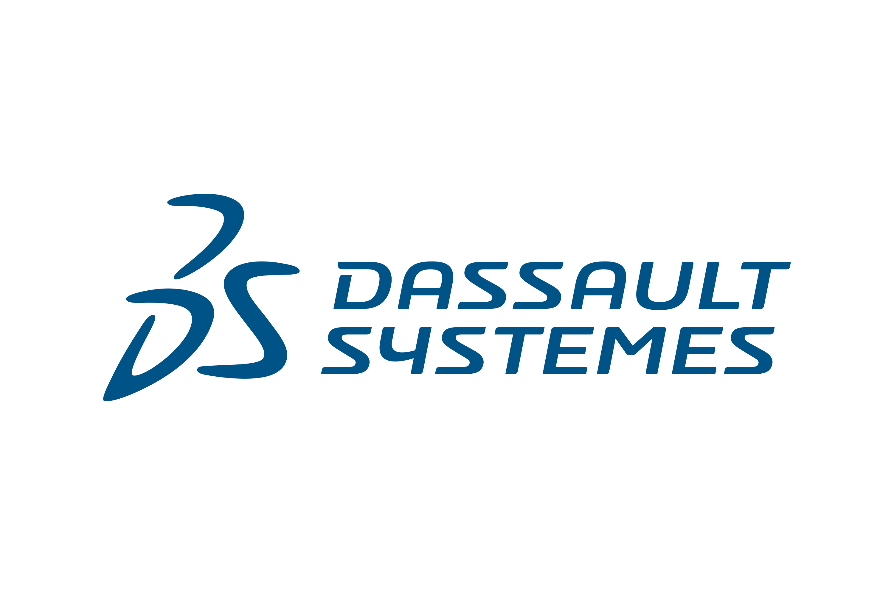
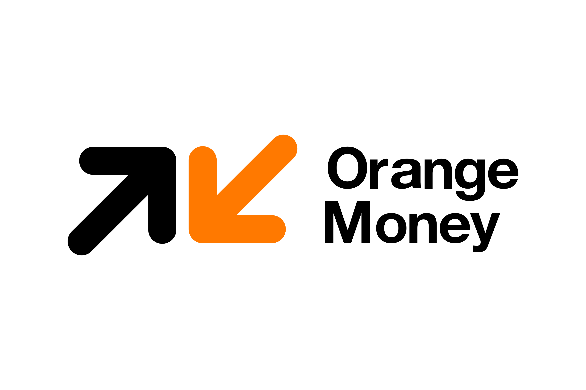

Hi, I'm [Amaëlle DIOP]
A passionate Junior Software Engineer focused on building clean, efficient, and user-friendly software solutions.
View My WorkFeatured Projects

[QA & Software Testing] - Custom Framework & SDK Development
Enterprise-scale modular testing framework with significant maintenance reduction and speed improvement.
[Machine Learning - Full-Stack Dev] - Sky Denied Web Application
Novel queueing theory-integrated deep learning model for intelligent flight delay prediction with exceptional performance.

[Full-Stack Dev] - FinTech Banking Reconciliation Platform
Enterprise financial solution with automated reconciliation and significant discrepancy resolution.